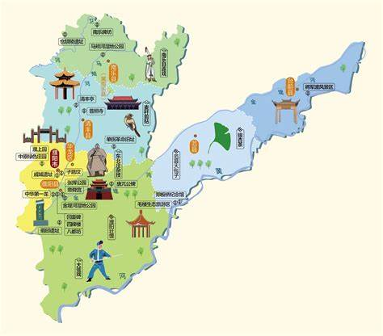

濮阳地图

濮阳景点
- 戚城遗址
- 仓颉陵遗址
- 郑板桥纪念馆
- 濮阳绿色庄园
- 东北庄杂技文化旅游景区
- 濮水小镇
戚城又称“ 孔悝城”，是春秋时卫国的重要城邑。地上的部分为周长1520米的古城残垣，占地面积1440平方米， 地下则保存着自6000多年前仰韶文化到汉代等不同时期历史遗存。景区总占地面积760亩，自1991年3月起，历时5年建成， 其中有纪念景点5处，文物及遗址展示3处。
仓颉陵遗址位于河南省濮阳市南乐县梁村乡吴村，仓颉陵遗址上建有仓颉陵墓和仓颉庙，还有藏甲楼、故宅井及部分石刻、碑 刻。主要修复的建筑有万古一人殿、仰圣门、碑亭、朝天门、六书殿、字圣坊、造书台、碑林。
郑板桥纪念馆位于河南省濮阳市范县辛庄乡毛楼村，纪念馆不大，建筑也不豪华，院落中央矗立着郑板桥先生的塑像，他沉思站立， 忧国为民的情结透过塑像表露天下。
濮阳绿色庄园是一处集生态保护、科技示范、观光旅游、 濮阳绿色庄园景区-度假诸功能于一体的大型自然生态公园，规划面积72.46公顷。
东北庄杂技历史悠久，在明朝以前，东北庄原名叫吕楼，就是三国人物吕布的老家。另据史料记载，东北庄始成于唐末宋初，因地处“桑间濮上”之东北方向 而得名。
濮水小镇（濮阳古城）是2017年河南省第一批A类重点建设项目 [1]，汇丰集团打造的中国首席以5A级标准的春秋文化古城旅游景区，将濮阳历史文化予以情景化展示。项目为戏曲文化主题小镇
为了获得最佳浏览效果，建议在分辨率大于或等于 1024*768 的屏幕下浏览网站 建议浏览器
©2023 - 2024 濮阳职业技术学院
地址:濮阳市华龙区濮大8号楼427室 联系电话:13462912757